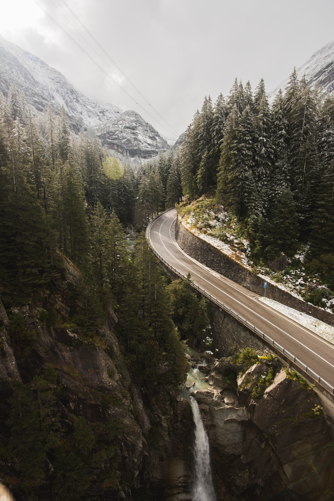
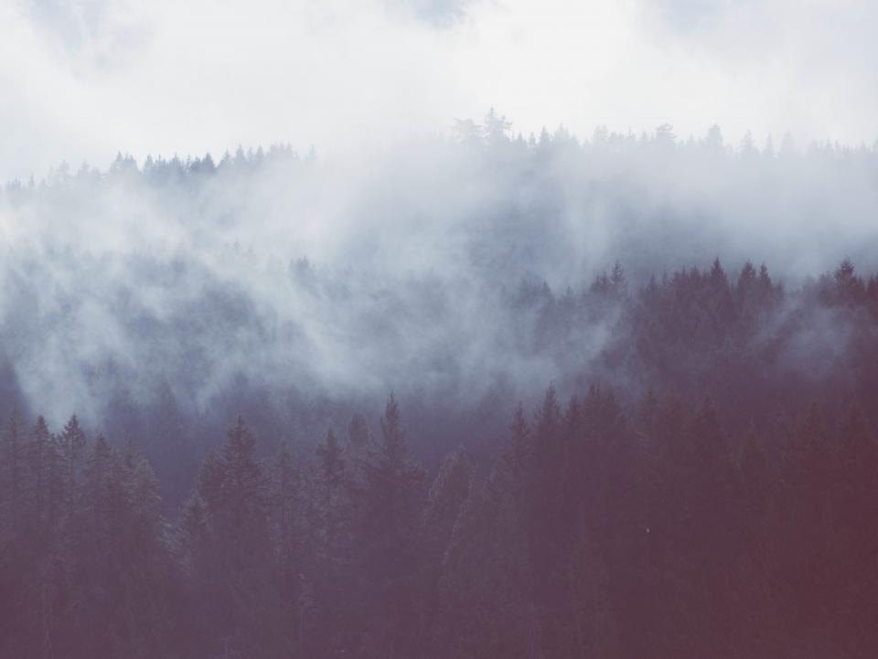
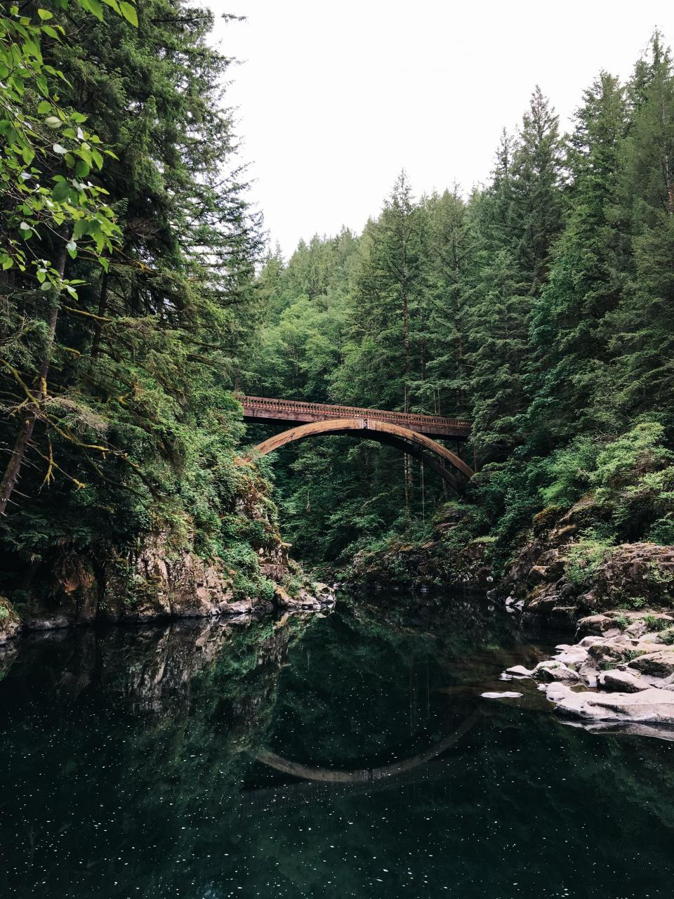
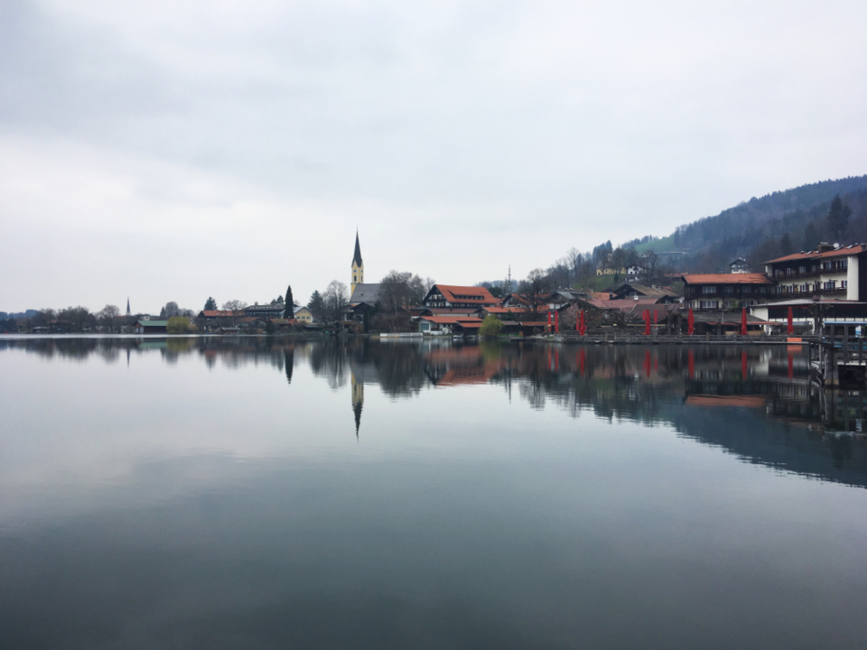

CORDILLERA / 12 MIN
↗The long road north
Three days through rain, mountain roads and towns that disappear into cloud before noon.

Three days through rain, mountain roads and towns that disappear into cloud before noon.

A ridge, a pot of coffee and the slow arrival of weather from the east.

Notes on green light, flooded paths and the hour immediately after a storm.

Following the mountain wall where rivers meet the eastern coast.